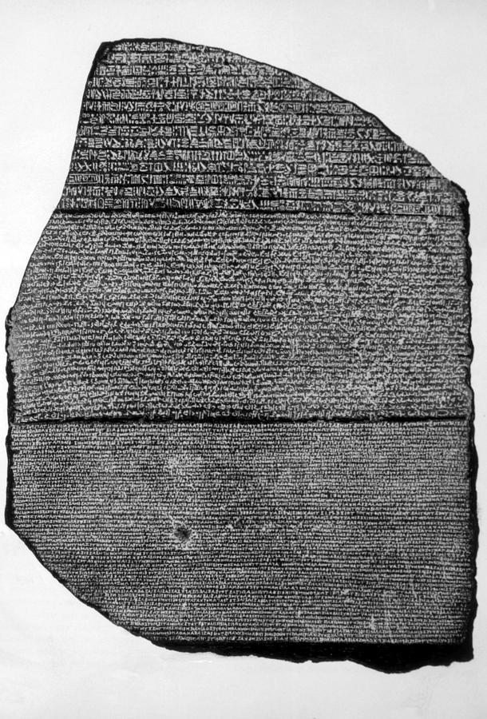

📖
قاموس ومصطلحات المحاضرة للمرشد (اضغط هنا لفتح / طي القاموس)
TOUR GUIDE BILINGUAL GLOSSARY
▼
قاموس ومصطلحات المحاضرة للمرشد (اضغط هنا لفتح / طي القاموس)
TOUR GUIDE BILINGUAL GLOSSARY💡 تنبيه للمرشد السياحي: هذه المصطلحات والكلمات مستخرجة من المنهج الأكاديمي المعتمد، ومزودة بالنطق الصوتي والمعنى السياقي للمرشد:
Epiphanes
إبيفانس (الإله الظاهر / God Manifest)
اللقب الرسمي لبطليموس الخامس، ومعناه باليونانية "الإله المتجلي/الظاهر بين رعيته"، ارتقى العرش طفلاً في سن 6 سنوات بعد مصرع والديه.
The Rosetta Stone
حجر رشيد (مرسوم منف 196 ق.م)
حجر من البازلت الأسود/الجرانوديوريت، صدر بمناسبة تتويج الملك في منف عام 196 ق.م، عثر عليه في رشيد عام 1798 وكان مفتاح حل الهيروغليفية.
Decipherment of Hieroglyphs
فك رموز وطلاسم الهيروغليفية
العمل العلمي التاريخي الذي قاده شامبليون عام 1822 بمقارنة أسماء الملوك والملكات (مثل بطليموس وكليوباترا) بين النصين اليوناني والمصري.
The Three Scripts
الخطوط الثلاثة (هيروغليفي • ديموطيقي • يوناني)
كُتب الحجر بلغة واحدة مصرية بخطين (هيروغليفي للكهنة وديموطيقي للشعب) واللغة اليونانية بالخط اليوناني لحكام الدولة والإدارة.
Silver Urns
الأواني الفضية لحفظ رماد الموتى
جرار فضية خرج بها سوسيفيوس وأغاثوكليس إلى شعب الإسكندرية زاعمين كذباً أنها تحوي رماد الملك والملكة أرسينوي للتغطية على جريمة القتل.
Cleopatra I
الملكة كليوباترا الأولى السورية
ابنة الملك السلوقي أنطيوخوس الثالث، أول ملكة تحمل اسم «كليوباترا» في تاريخ مصر القديمة، تزوجت بطليموس الخامس في رفح عام 193 ق.م.
Stadium of Alexandria
ملعب / إستاد الإسكندرية القديم
الميدان الرياضي الضخم الذي اقتاد فيه ثوار الإسكندرية الطاغية أغاثوكليس وعائلته ومزقوهم إرباً إرباً انتقاماً لاغتيال الملكة أرسينوي.
Torn Limb from Limb
التمزيق والسحل إرباً إرباً
الوصف الحرفي الوارد في الكتاب (ص 53) لنهاية أغاثوكليس وحاشيته على أيدي جماهير الإسكندرية الهائجة بعد اقتحام القصر الملكي.
Coronation at Memphis
التتويج الفرعوني في منف (196 ق.م)
إقامة طقوس تنصيب الملك في العاصمة الدينية التاريخية منف أمام تمثال الإله بتاح لكسب ولاء الكهنة والمصريين وسط الثورات المشتعلة.
Decree of Memphis
مرسوم منف (27 مارس 196 ق.م)
القرار المجمعي الصادر عن مؤتمر كهنة مصر في منف، يشيد بإحسانات بطليموس الخامس وتبرعاته للمعابد وإعفاء الشعب من بعض الضرائب المتأخرة.
Humiliation of Greek Officer
إهانة الضابط الإغريقي بالمحكمة
إجبار ضابط مقدوني على الوقوف عارياً في قاعة المحاكمة بأمر أغاثوكليس؛ فكانت القشة التي أشعلت غضب الجيش وشعب الإسكندرية ضده.
Sole Regent
الوصي المنفرد على العرش
انفراد أغاثوكليس بالوصاية على الملك الطفل بعد وفاة سوسيفيوس العجوز، وممارسته الاستبداد والمحسوبية لصالح عائلته وأصدقائه الفاسدين.
Forged Royal Will
الوصية الملكية المزورة
وثيقة مزورة ادعى سوسيفيوس وأغاثوكليس أن بطليموس الرابع كتبها قبل موته تعينهما وصيين شرعيين على العرش لحرمان الملكة أرسينوي.
Tax Remissions
الإعفاءات الضريبية للمعابد والشعب
التنازل عن المتأخرات الضريبية وإعفاء كهنة المعابد من رسوم معينة، كما سُجل في مرسوم رشيد لاستمالة الكهنة وإخماد ثورات الصعيد.
الملك الطفل، اغتيال أرسينوي الثالثة، وخدعة الأواني الفضية والوصية المزورة
🇪🇬 الترجمة الأكاديمية والشرح التفصيلي للفقرة
ص ٥٢ بالكتاب• اعتلاء الطفل العرش ووصاية الأم الشرعية (204 ق.م): بعد وفاة الملك بطليموس الرابع في ظروف غامضة، تولى ابنه الصغير بطليموس الخامس إبيفانس (Ptolemy V Epiphanes) عرش مصر وكان طفلاً صغيراً في السادسة أو السابعة من عمره فقط؛ وبناءً على ذلك وُضع الملك الطفل تحت الوصاية الرسمية لوالدته الملكة أرسينوي الثالثة (Queen Arsinoe III).
• المؤامرة الشنعاء واغتيال الملكة أرسينوي الثالثة: خشي الوزير سوسيفيوس والنديم أغاثوكليس من شخصية الملكة أرسينوي القوية وبطولتها في معركة رفح؛ فقاما بـ اغتيال الملكة أرسينوي الثالثة سراً داخل القصر الملكي!
• مسرحية الأواني الفضية والوصية المزورة: تستر المتآمران على نبأ وفاة الملك والملكة لأيام؛ ثم خرجا فجأة أمام حشود شعب الإسكندرية يحملان إناءين فضيين (two silver urns) يزعمان أنهما يحتويان على رماد الملك والملكة بعد حرق جثمانيهما! وأعلنا وفاة الزوجين معاً، لكن شعب الإسكندرية لم يصدق إطلاقاً أن الملكة المحبوبة قد ماتت وفاة طبيعية. وعلاوة على ذلك، أعلن سوسيفيوس وأغاثوكليس وجود وصية ملكية مزعومة يُعينهما فيها الملك وصيين على عرش مصر.
• وفاة سوسيفيوس واستبداد أغاثوكليس المنفرد: كان سوسيفيوس قد طعن في السن (حيث بدأ مسيرته في عهد بطليموس الثالث ثم الرابع والخامس)؛ ومات بعد فترة قصيرة من إحكام قبضته مع أغاثوكليس، ليصبح أغاثوكليس الوصي المنفرد والمطلق على العرش (sole regent).
• محسوبية أغاثوكليس وكراهية الشعب: أحاط أغاثوكليس نفسه برفاق السوء، وقام بتعيين أقاربه وأصدقائه الفاسدين في أعلى مناصب الحكومة والدولة، فكرهه شعب الإسكندرية هو وعائلته كرهاً شديداً.
ORIGINAL ENGLISH SOURCE
King Ptolemy V Epiphanies 204-180 BC.
"After the death of Ptolemy IV, Ptolemy V Epiphanies came to the throne at the age of six or seven, and therefore the young king Epiphanies was placed under the regency of his mother queen Arsinoe III."
"Sosibious and Agathocles killed queen Arsinoe III, and they did not announce the news of her death and the death of Ptolemy IV, after that they went out to the people of Alexandria while carrying two silver of urns (jar which contains the ashes of the deceased), and announce the death of the king and the queen. The people of Alexandria didn't believe that the queen met a natural death. Moreover Sosibious and Agathocles announced that there is a will in which the king appoints them both as regency of the throne."
"Sosibious became very old (Sosibious began his career during the lifetime of Ptolemaic kings III, IV, V) after ruling the country with Agathocles for short period, he died. Agathocles became the soul regent of the throne."
"Agathocles surrounded himself by his bad friends; moreover he appointed his relatives and friends in high position in the government. The people of Alexandria hated king Agathocles and his family, and they revolted against them..."
📜
استزادة للمرشد: 🏺
حكاية للتاريخ والإرشاد: إناء الرماد الفضي وكذبة القصر التي لم يصدقها شعب الإسكندرية!
حكاية تاريخية
▼
كانت الملكة الشابة أرسينوي الثالثة هي البطلة القومية المحبوبة في عيون شعب الإسكندرية منذ ركوبها فرسها بين رماح الفالنج في معركة رفح. وحين مات زوجها بطليموس الرابع فجأة، سارع سوسيفيوس وأغاثوكليس إلى غرفتها وخنقوها خشية أن تعزلهما وتستأثر بالحكم وحدها! وأخفيا الجثتين طوال أسبوعين حتى احترقتا، ثم وقفا على شرفة القصر يحملان إناءين فضيين يتصاعد منهما الرماد، باكين بدموع التماسيح: «لقد صعد الملك والملكة معاً إلى الآلهة!». لكن أهل الإسكندرية صرخوا في وجوههم: «الملكة كانت شابة قوية ولم تكن مريضة! أين جثمان بطلة رفح؟». سكت القصر مؤقتاً، لكن نار الغضب الجماهيري كانت تغلي تحت الرماد في انتظار شرارة الانفجار.
شرارة الثورة، اقتحام القصر الملكي، وسحل أغاثوكليس في إستاد الإسكندرية
🇪🇬 الترجمة الأكاديمية والشرح التفصيلي للفقرة
ص ٥٢ - ٥٣ بالكتاب• شرارة الثورة (إهانة الضابط الإغريقي): كان السبب المباشر لاندلاع الثورة العارمة هو محاكمة عسكرية لضابط يوناني شهير، حيث تعمد أغاثوكليس إهانته وإذلاله بشدة أمام الملأ من خلال إجباره على الوقوف عارياً تماماً في قاعة المحكمة (standing naked in the court).
• انتفاضة الشعب واقتحام القصر الملكي: ثار غضب ضباط الجيش وجماهير الإسكندرية، وهاجمت الحشود القصر الملكي لمحاصرة أغاثوكليس وعائلته الفاسدة وتحرير الملك الطفل بطليموس الخامس من أيديهم.
• انضمام حرس القصر للثوار: انحاز حراس القصر الملكي (palace guards) إلى صفوف الشعب الثائر، وفتحوا الأبواب واقتحموا الغرف الملكية؛ فتم القبض على الطاغية أغاثوكليس ومحظية القصر أغاثوكليا وكامل عائلتهم وأقاربهم.
• المحاكمة الشعبية والسحل في الإستاد: سيق المتهمون وسط صيحات الجماهير إلى إستاد وملعب الإسكندرية (Stadium)؛ وبعد محاكمة شعبية سريعة أُدينوا جميعاً بجرائم الخيانة والقتل والفساد، وكانت نهايتهم البشعة أن مزقهم شعب الإسكندرية إرباً إرباً وسحلوهم (torn from limb to limb) انتقاماً لدم الملكة أرسينوي!
ORIGINAL ENGLISH SOURCE
"...the cause of the revolt was the trial of a Greek officer who was humiliated during the trial by making him standing naked in the court."
"The people of Alexandria attack the royal palace in order to arrest Agathocles and his family, and to set the young king free, the guards of the palace help the people, and then Agathocles and his family were arrested and were taken to the stadium, after short trial, they were found guilty, and they were torn from limb to limb."
📜
استزادة للمرشد: ⚡
حكاية للتاريخ والإرشاد: يوم اهتزت فيه الإسكندرية وسُحل الطغاة في الإستاد الكبير!
حكاية تاريخية
▼
حين أمر أغاثوكليس بتجريد الضابط المقدوني من ثيابه وإذلاله في قاعة العدالة، لم يدرك أنه وقع وثيقة إعدامه بيده! هبت فرق الجيش المقدونية وانضمت إليها جموع الشعب في مظاهرة زلزلت العاصمة. تدفق الآلاف نحو حي بروخيون الملكي، وتسلقوا أسوار القصر الفخم. احتمى أغاثوكليس وشقيقته أغاثوكليا بغرفة الملك الصغير مرتعدين يستعطفان الطفل. لكن حرس القصر أزاحوهما جانباً وحملوا الطفل الصغير على الأكتاف هاتفين بحياته، بينما قيدوا أغاثوكليس وسحبوه بالحبال إلى الإستاد الروماني الكبير. وهناك، أمام عشرات الآلاف من الأعين الغاضبة، انقضت الحشود على الأسرة الفاسدة ومزقوهم إرباً إرباً حتى لم يبقَ لهم أثر، في واحدة من أعنف الثورات الشعبية في تاريخ الإسكندرية القديمة!
غزو أنطيوخوس لسورية المجوفة، والمصاهرة التاريخية مع الملكة كليوباترا الأولى
🇪🇬 الترجمة الأكاديمية والشرح التفصيلي للفقرة
ص ٥٣ بالكتاب• استغلال السلوقيين للفوضى واحتلال الشام: انتهز الملك السلوقي القوي «أنطيوخوس الثالث» فرصة الاضطرابات والوصاية الضعيفة في مصر؛ فزحف بجيوشه واجتاح إقليم سورية المجوفة (Cole of Syria) واحتل كامل المنطقة وطرد القوات البطلمية منها.
• المفاوضات الدبلوماسية ومعاهدة السلام: أرسلت الحكومة المصرية وفداً دبلوماسياً للتفاوض مع أنطيوخوس الثالث لإنقاذ مصر من الغزو وتجنب حرب جديدة؛ وتوصل الطرفان إلى اتفاق سلام تاريخي يقضي بـ زواج الملك الصغير بطليموس الخامس من الأميرة «كليوباترا» ابنة الملك أنطيوخوس الثالث.
• ظهور اسم «كليوباترا» الأول في تاريخ مصر (193 ق.م): عندما بلغ بطليموس الخامس سن الرشد والرجولة (reached manhood)، تم الاحتفال بزواجه رسمياً من الأميرة السورية لتصبح الملكة كليوباترا الأولى (Queen Cleopatra I)، وبدأت تحكم البلاد وتشاركه إدارة مصر، وهي الجدة الكبرى لكليوباترا السابعة الشهيرة.
ORIGINAL ENGLISH SOURCE
"King Antiochus III reached the Cole of Syria and occupied the whole region. The government send an embassy in order to negotiate the matter with Antiochus III, they reached an agreement in which king Ptolemy V would marry the daughter of king Antiochus III princess Cleopatra, when king reached manhood, he married queen Cleopatra I and he began to rule the country with her."
📜
استزادة للمرشد: 👑
حكاية للتاريخ والإرشاد: كيف دخل اسم «كليوباترا» تاريخ مصر لأول مرة في رفح؟
حكاية تاريخية
▼
اسم «كليوباترا» في اللغة اليونانية يعني «مجد أبيها» (Kleos = مجد + Pater = أب). وقبل عام 193 ق.م، لم يكن هناك ملكة واحدة في مصر تحمل هذا الاسم؛ بل كانت ملكات البطالمة يتسمن بـ «أرسينوي» أو «برنيكي». لكن عندما تزوج الشاب بطليموس الخامس من الأميرة السلوقية كليوباترا في مدينة رفح الحدودية لإنهاء الصراع على الشام، دخل هذا الاسم التاريخ المصري لأول مرة. وكانت كليوباترا الأولى ملكة حكيمة داهية، استطاعت حماية مصر من ويلات الحروب، وأنجبت ملوكاً تعاقبوا على العرش حتى حفيدتها السابعة كليوباترا الأشهر في العالم القديم.
مرسوم التتويج بمنف (196 ق.م)، حجر رشيد، وفك أسرار اللغة المصرية القديمة
🇪🇬 الترجمة الأكاديمية والشرح التفصيلي للفقرة
ص ٥٣ - ٥٥ بالكتاب• مرسوم التتويج الديني في منف (27 مارس 196 ق.م): في عهد بطليموس الخامس، صدر مرسوم ديني ورسمي رفيع المستوى في 27 مارس 196 ق.م لتخليد الطقوس الدينية والشعائر التي أُقيمت بمناسبة تتويج الملك كفرعون لمصر في العاصمة الدينية القديمة منف (Memphis).
• الشهرة العالمية ومفتاح علم المصريات: لم يكتسب هذا المرسوم شهرته الطاغية بسبب محتواه السياسي والطقسي فحسب، بل لـ إسهامه التاريخي الخالد في فك رموز وطلاسم الخط الهيروغليفي المصري (Decipherment of Egyptian hieroglyphs).
• حجر رشيد واكتشافه (1798م): يُعرف هذا الحجر الحجري اليوم في المتاحف العالمية باسم «حجر رشيد» (The Rosetta Stone) نسبة إلى العثور عليه في مدينة رشيد بالدلتا عام 1798 أثناء الحملة الفرنسية.
• لغتان وثلاثة خطوط (Two languages, Three scripts): دُوّن المرسوم على الحجر بلغة واحدة مصرية ولغة يونانية، وبـ ثلاثة خطوط كتابية متوازية (ص 55):
- الخط الهيروغليفي (Hieroglyphic): الخط المقدس لنقوش المعابد والكهنة ورجال الدين.
- الخط الديموطيقي (Demotic): الخط الشعبي اليومي السريع لعامة المصريين والمعاملات.
- الخط واللغة اليونانية (Greek): اللغة الرسمية لحكام البطالمة والبلاط الحاكم.
• كيف فك الحجر الشفرة؟: مكنت هذه النسخة الثلاثية العلماء الأوروبيين (الذين كانوا يعرفون اليونانية القديمة جيداً) من مقارنة النص اليوناني بالنصوص المصرية، وبدء فك خراطيش الأسماء الملكية (مثل بطليموس Ptolemaios) حتى نجح العبقري شامبليون في قراءة الهيروغليفية عام 1822.
• أبناء الملك بعد وفاته (ص 54): توفي بطليموس الخامس عام 180 ق.م تاركاً ولدين وبنتاً: الابن الأكبر بطليموس السادس فيلوميتور، والابن الأصغر بطليموس الثامن إيورجيتس الثاني (فيسكون)، وابنة هي الملكة كليوباترا الثانية.
ORIGINAL ENGLISH SOURCE
"During his reign, A Decree (issued on March 27, 196 BC) commemorates the religious ceremonies that took place at the king’s coronation at Memphis, but this has become famous not so much for its content as for the contribution that it made to the decipherment of Egyptian hieroglyphs. Known today as the Rosetta Stone (since it was discovered at Rosetta in 1798), the Decree was inscribed in hieroglyphs, Demotic and Greek; this triple version enabled scholars, who knew Greek, to begin deciphering the corresponding Egyptian scripts."
"After the death of Ptolemy V, he left two sons and daughter, the eldest son was called Ptolemy VI and the youngest son was called Ptolemy Euergetes II and a daughter which called Cleopatra II."
"The Rosetta Stone is a stone with writing on it in two languages (Egyptian and Greek), using three scripts (hieroglyphic, demotic and Greek)."
📜
استزادة للمرشد: 𓆣
حكاية للتاريخ والإرشاد: كيف أيقظ حجر رشيد صوت الفراعنة بعد ألف عام من الصمت؟
حكاية تاريخية
▼
لم يكن كهنة منف حين نقشوا مرسوم 27 مارس 196 ق.م يدركون أنهم يقدمون أعظم هدية لتاريخ البشرية! كانت ثورات الصعيد تشتعل، واليونانيون غرباء في الإسكندرية؛ فأمر الكهنة بنقش المرسوم بثلاثة خطوط: اليوناني لكي يقرأه الحاكم المقدوني، والديموطيقي ليفهمه موظفو الشعب المصري، والهيروغليفي المقدس لترتاح إليه أرواح الآلهة في المعابد. وبعد قرون طويلة، دُفن الحجر في جدار قلعة سان جوليان برشيد حتى عثر عليه ضابط فرنسي يُدعى بوشار عام 1798. وحين رأى جان فرانسوا شامبليون الحجر، لاحظ تكرار خرطوش اسم الملك بطليموس (P-T-O-L-M-Y-S) في النص الهيروغليفي مع نفس الاسم باليونانية؛ فصاح في باريس: «لقد وجدتها!»، لتعود لغة الفراعنة للحياة وتُقرأ جدران المعابد المصرية بعد قرون من الظلام!
🖼️ الشواهد الأثرية المعتمدة بالكتاب الجامعي (ص ٥٤ - ٥٥)
صورة حجر رشيد الأصلية المعتمدة في الكتاب الجامعي المعتمد للمقرر (ص 54) مع تحليل أقسام الكتابة الثلاثة:

حجر رشيد (The Rosetta Stone)
لوح الجرانوديوريت الأسود الشهير، صادر في 196 ق.م بمرسوم منف الديني في عهد بطليموس الخامس، وهو مفتاح فك رموز الحضارة المصرية.
تحليل اللغتين والخطوط الثلاثة
محتوى مرسوم حجر رشيد الحقيقي
بخلاف قيمته اللغوية، يسجل الحجر قرارات سياسية واقتصادية حاسمة لتهدئة الثورات:
- تتويج الملك في منف كفرعون شرعي أمام الإله بتاح.
- إلغاء وإسقاط متأخرات الضرائب عن المزارعين.
- تقديم منح وهبات ذهبية وزيوت وأقمشة للمعابد المصرية.
- إطلاق سراح المعتقلين والمساجين السياسيين.
افتح تدريبات وأسئلة الدرس
🎯 بنك الأسئلة التدريبي التفاعلي للمحاضرة الثامنة (10 أسئلة)
مُعد طبقاً لنص ومصطلحات — اختيار من متعدد مع التصحيح الفوري والشرح النموذجي.
نتيجة التقييم الفوري
أجب عن الأسئلة واضغط «تصحيح الاختبار» لإظهار نتيجتك وملاحظات المراجعة.